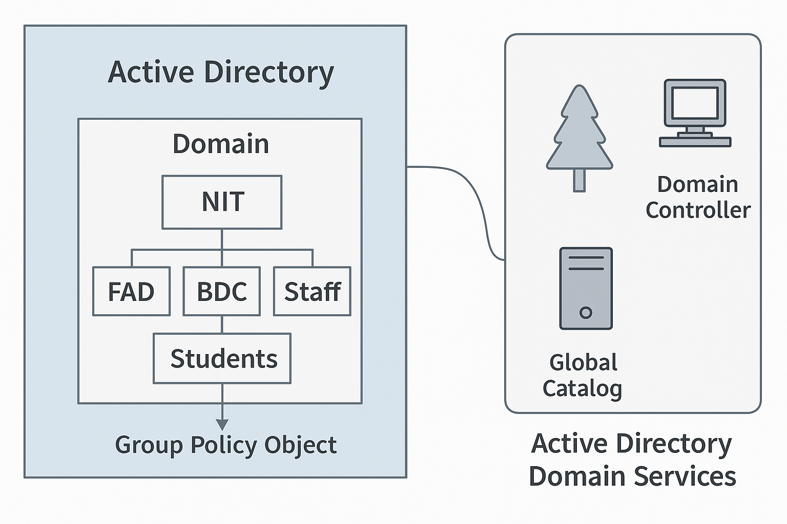

Active Directory (AD) is Microsoft’s directory service that provides a centralized system for managing users, computers, groups, applications, and resources across a Windows network. Think of it as the phone book + security guard + control center for your IT environment.
Apply security settings and configurations (password policies, desktop restrictions, software deployment) centrally via Group Policy Objects (GPOs).
AD scales from small networks (dozens of users) to global enterprises with hundreds of thousands of objects.
Imagine a university with thousands of students and staff:
Microsoft directory service that stores information about network objects and provides centralized authentication, authorization, and administration.
A server running AD DS that authenticates users/computers, enforces security policies, and replicates directory data to other DCs.
A container inside a domain used to organize users, groups, and computers; useful for applying GPOs and delegating administration.
A special read-only database containing a subset of attributes for every object in the forest — used for fast searches and cross-domain logons.
A set of settings and rules applied to users or computers in AD to control security, configuration, and behavior (e.g., disable USB drives).
The core service running on DCs that provides directory storage, authentication, replication, and policy enforcement.

This diagram illustrates AD structure and tips: build a lab, map concepts, and practice common tasks.